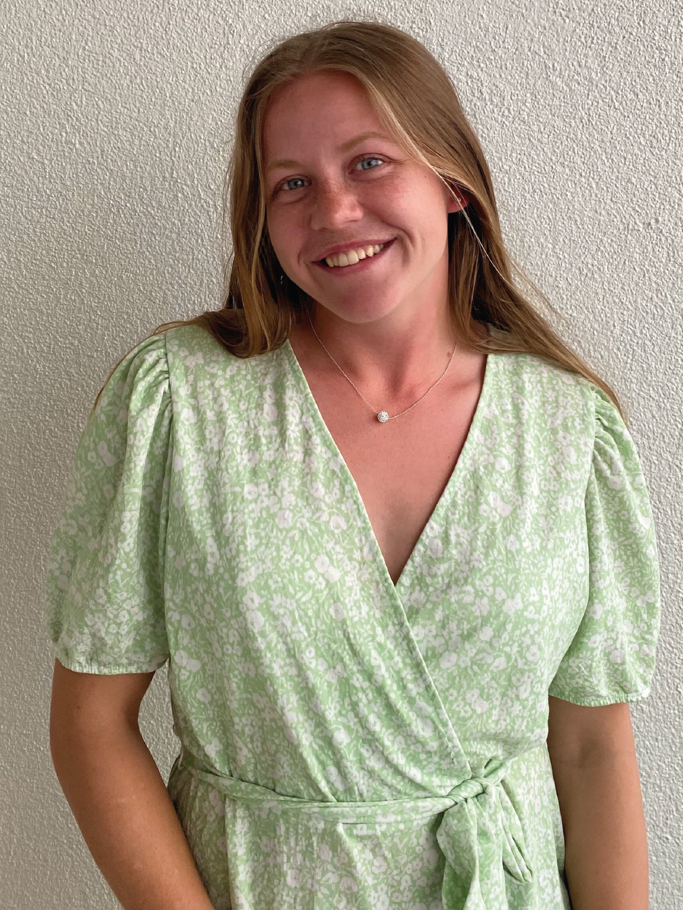

 Hard working international student-athlete at the University of Arkansas at Little Rock, majoring in Information Science with expected graduation in May 2022. Experience in entrepreneurship and start-up of a mobile app company. Designed a concept and brought it to established developers and served as product owner in the building process of the app. Combining sports and studies has excelled me in cooperation, organization and time management skills. In 5 years I see myself working for either my own mobile app company or as a systems architect at a software company.
University of Arkansas at Little Rock. Little Rock, AR,USA.
University of Arkansas at Little Rock. Little Rock, AR,USA.
The following academic accomplishments was all received at the University of Arkansas at Little Rock.
Awarded to one studnet per class. Motivation: for excellent GPA and innovative Individual Study Project.
Receivd during all semsters. Awarded to all students with a GPA of 3.5 or higher taking a minimum of 9 hours during a semester.
Receivd during all semsters. Awarded to EIT students with a GPA of 3.5 or higher taking a minimum of 9 hours during a semester.
You're welcome to download my resume in PDF format
T.E.A.S.R stands for Train, Eat, Analyze, Sleep, Repeat and is the company behind a smartphone application that primraly helps athletes with just that with just that. My role in the company is being the product owner where I oversee all of the development and design work as well as making sure our brand is communicated efficiently.
March 2020 - Present
Boras Zoo has two buffet restaurants that each day require a day manager that make sure that the operations of the restaurant run smoothly.
July 2017- June 2019
University of Arkansas at Little Rock, 2019-2022
Dear Sir or Madam,
I am writing to you as I am interested in a position at your company. When it is suitable for you, I would greatly appreciate having the opportunity to discuss what my candidacy could bring to your company. Please see my attached resume.
As a product owner for my own start-up mobile app company, I have experience of entrepreneurship, project management as well as system analysis and design. The mobile app was designed based on self-experienced problems faced as a high school and college student-athlete. The development gave me experience in assessing needs from users and meet them with a smart software solution. Further I gained experience in agile project development that enhanced my communication and problem solving abilities.
Further, through my experience with my start-up business I know how to raise capital, gain user engagement and deliver effective marketing strategies. This has allowed me a broad knowledge in managing teams and a business which makes me ideal for positions within project management.
I am currently pursuing a B.S in Information Science and Minor in Digital Graphics at the University of Arkansas at Little Rock. Through my education I’ve become proficient in Python, Java, HTML, CSS, JavaScript, SQL, Word and Excel. Together with my design proficiency in Adobe Illustrator, Photoshop and After effects, I can offer both the software development and analysis as well as UX/UI design.
Through my experience I believe I can become a valuable team member at your company. I’m looking forward to meet with you to further discuss my candidacy. You can reach me through my email hilma@stateraapp.com and I’ll be at your convenience.
Thank you for out time and consideration!
Sincerely yours,
Hilma Svalander